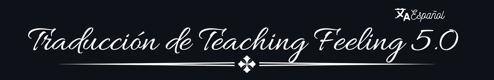

Proyecto de Traducción Fan-Made al Español
¡Bienvenido! Esta es la página oficial para seguir el progreso y descargar la traducción al español de la novela visual Teaching Feeling. Nuestro objetivo es ofrecer una traducción fiel, adaptada y testeada para que disfrutes de la experiencia completa sin perder ningún detalle de la historia.
Actualizado constantemente a medida que avanzamos en los archivos del juego.
Selecciona tu plataforma para descargar el parche o la versión correspondiente. Asegúrate de leer las instrucciones de instalación incluidas.
v1.1 - Última actualización
v1.0 - Lanzamiento inicial